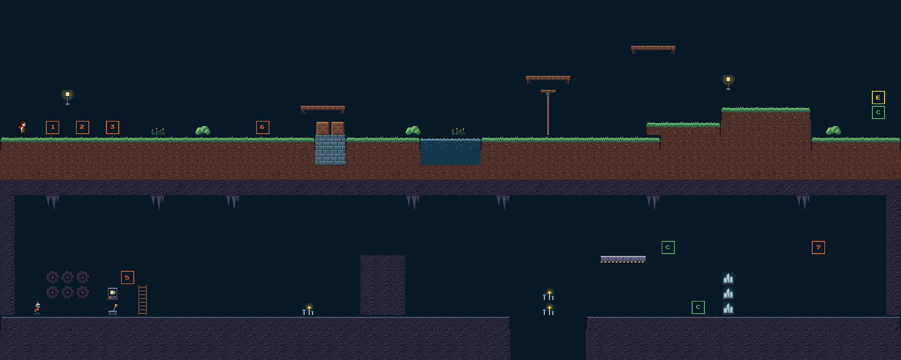
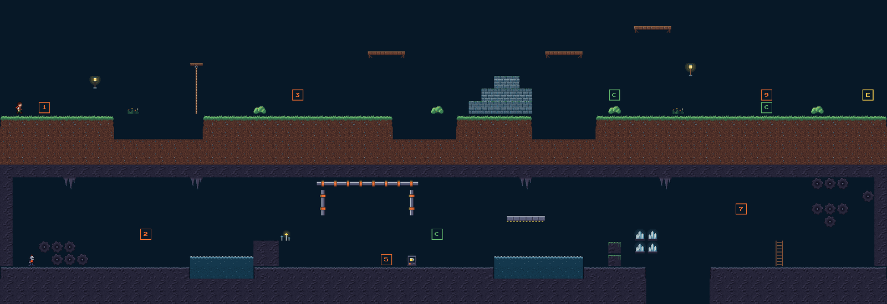

Así avanza Entre Dos Mundos. Contamos lo que construimos cada semana, con capturas reales del proyecto en Unity 6.
Entrada #05 · Primer Capítulo
Del Prólogo al Capítulo 1: diseño completo de los dos primeros mapas
Esta semana hemos cerrado la estructura completa del Prólogo (Nivel 0) y del Primer Capítulo (Nivel 1)[cite: 1]. Nuestro objetivo al diseñar el Capítulo 1 era dar un salto en verticalidad y exigir que el jugador combine de verdad el cambio entre Nil (en la superficie del bosque) y Volt (en las galerías subterráneas)[cite: 1].
Empezamos bocetando la progresión de obstáculos sobre cuadrícula para medir exactamente los saltos, la distancia de las cuerdas y los puntos donde Volt necesita invertir la gravedad con sus botas magnéticas o recargar la batería de su linterna antes de quedar a oscuras[cite: 1].

Nivel 0 (Prólogo): Introducción a las mecánicas básicas[cite: 1].

Nivel 1 (Capítulo 1): Puzles cooperativos y gravedad invertida[cite: 1].
Entrada #04
Mecánicas jugables: gravedad, cuerdas, agua y linterna
Volt ya camina por el techo con sus botas magnéticas y su linterna gasta batería. Nil se cuelga de cuerdas, se balancea en péndulos y puede caer al agua. Añadimos vidas, checkpoints, HUD y efectos de sonido[cite: 1].
Entrada #03
Niveles generados por código
Cada nivel se describe como un mapa de texto y Unity lo construye solo: suelo, plataformas, puntos de control, salida y diálogos. Así podemos diseñar y probar niveles mucho más rápido[cite: 1].
Entrada #02
Diálogos entre Nil y Volt
Escribimos el guion completo del prólogo y el primer capítulo, con un sistema de diálogos propio que muestra el nombre de quien habla y el texto letra a letra[cite: 1].
Entrada #01
Tileset de 32 px y paleta del juego
Creamos el tileset del bosque y de las cuevas con la misma paleta de colores de nuestra presentación, para que todo el juego tenga una identidad propia[cite: 1].